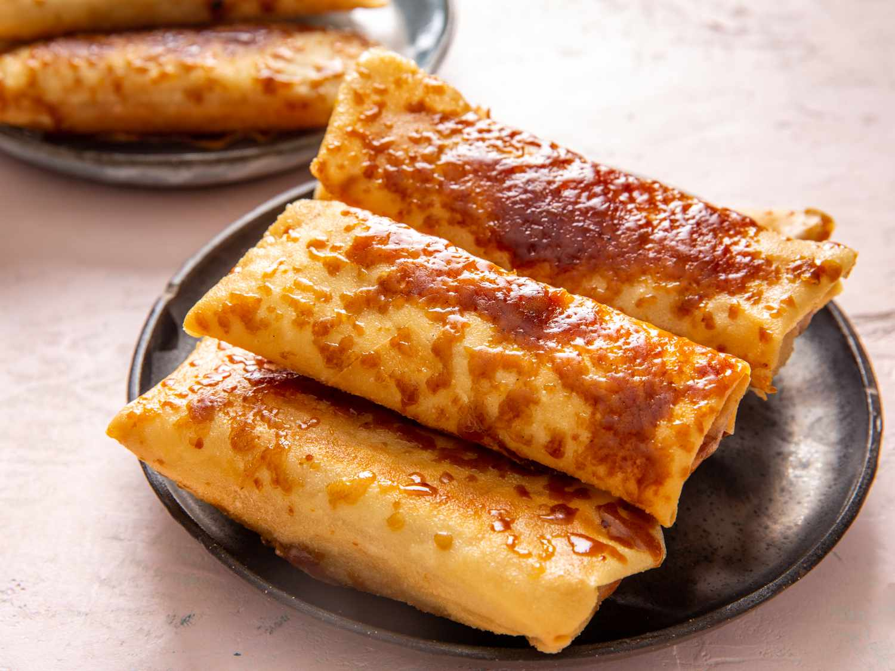

POPULAR DISHES
RECIPE 1
Sisig is a Filipino dish of chopped pig's face and ears seasoned with vinegar and spices, served on a sizzling plate.
RECIPE 2
Sinigang is a Filipino sour soup characterized by its tangy broth flavored with tamarind, typically cooked with meat, seafood, and vegetables.

RECIPE 3
Adobo is a Filipino dish made by marinating meat in vinegar, soy sauce, garlic, bay leaves, and black peppercorns, then simmering it until tender.

RECIPE 4
Turon is a Filipino dessert made of sliced bananas and sometimes jackfruit wrapped in spring roll wrappers, fried, and typically coated with caramelized sugar.
RECIPE 5
Halo-halo is a popular Filipino dessert consisting of a colorful mix of shaved ice, sweetened fruits, beans, jelly, and various toppings and sometimes ice cream.

RECIPE 6
Puto is a traditional Filipino steamed rice cake made from fermented rice dough, often sweetened with sugar and coconut milk, resulting in a fluffy texture.